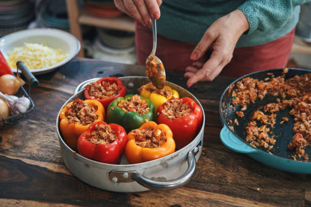

Stuffed Bell Peppers

Description
This is a rice, beans, and beef mixture that is stuffed inside of a bell pepper topped with chedar cheese.
Ingredients
- 4 bell pepper
- 1lb in ground beef
- taco seasoning
- 1 cup dry sticky rice
- 1 1/3 cup of water
- can of black beans
- 1 cup of chedar cheese
Steps
- rinse rice in strainer until water comes out clear
- place rice and water in rice cooker and cook
- cook ground beef in medium-high heat until no pink
- sprinkle taco seasoning on beef
- place can of black beans in a pan and cook off most of the liquid
- combine rice,beef,and beans to make the mixture (prefferable in a large pan)
- cut off the tops of all 4 bell peppers and remove seeds
- stuff the peppers with mix
- place in oven for 10 minutes at 400 degrees
- take out of oven and put 1/4 cup of cheese on each bell pepper and put back in the oven for 2 minutes
- Enjoy!
Home